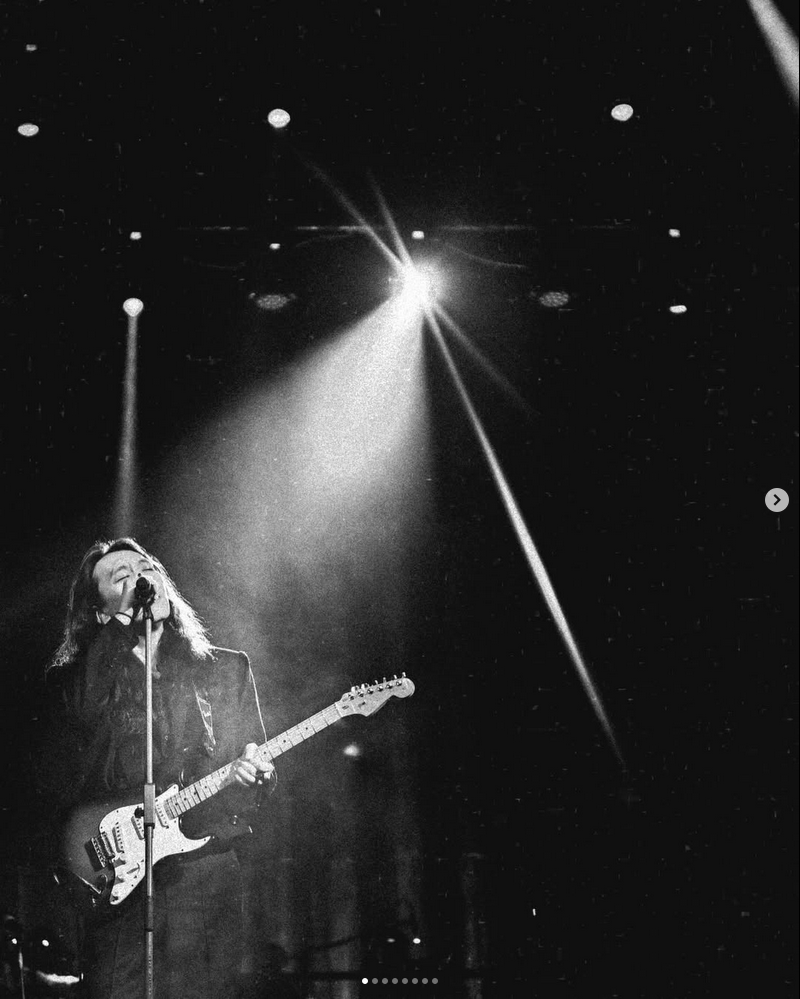

Энэ дуугаараа вэбсайтаа төгсгөе дөө. Сэтгэлээ шингээж хийсэн болохоор аль болох гоё болгохыг хичээсэн юм шүү.
Анхны харцаар дурладаг гэдгийг мэдрүүлсэн болохоор энэ дуу санаанд минь орсон юм.

"Анхны хайртайгаа би сүүлд учирсан
Хамгийн сүүлд болохоор энэ
Үүрд хуучрашгүй
Чиний тунгалаг тод уруулаас буцаж иршгүй дурласан
Хаашаа хүрэхээ мэдэхгүй
Хоног өдөр чамруу урсаж
Танихгүй мөрүүд дээр гишгэж
Борооны дуслуудаар амьсгалж
Бодолдоо аль эрт тасарсан
Чиний бэлэглэсэн амьдрал
Анхны хайртайгаа сүүлд учирсан
Хамгийн сүүлд болохоор
Хэзээ ч хуучрахгүй
Надад таалагдаж байна, битгий зогсоорой
Надад цаг олдохгүй, чи дэргэд минь
Харах нүдэнд чинь огторгуй
Хэлэх үгэнд чинь согтмоор байна
Хаашаа хүрэхээ мэдэхгүй
Зөвхөн үнэн дунд төөрөлдөнө
Ганц үнсэлтэнд хөл алдмаар
Гараас чинь атгаад алдсан
Гал авсах шиг дүрэлзэнэ
Анхны хайртайгаа сүүлд учирсан
Хамгийн сүүлд болохоор хэзээ ч
Хэзээ ч хуучрахгүй"